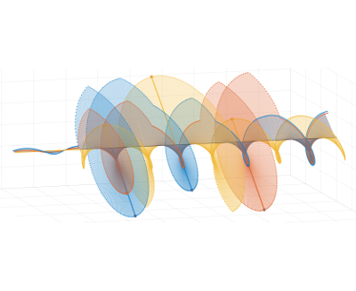

Phonological structure appears to be hierarchical because there are developmental changes in the sizes of coordinative structures. Phonological variation in the sizes of these structures is conditioned on language, speaker, and style.
Syntax with oscillators and energy levels
Syntactic patterns arise from a mechanism which transiently stabilizes a relative energy hierarchy. The energy hierarchy governs a diverse set of conceptual systems which are coupled and oscillatory.
Articulatory timing can vary substantially, even during the course of an experiment. Fluctuations in timing patterns reflect arousal, which can modulate interactions between phonatory, articulatory, and postural systems.
Every communicative interaction has the potential to change us. By studying the co-evolution of social and linguistic systems in controlled experiments we can gain a better understanding of how language patterns evolve in time and in space.
Papers
[2025]Phrasal rhythmicity and the sources of temporal intermittency in speech
Tilsen, S. To appear in Meyer, L. and Strauss, A. (Eds). Rhythms of Speech and Language, ch. 20. Cambridge University Press.
[2025]The Gesture-Field-Register (GFR) framework for modeling F0 control
Kim, S.-E. & Tilsen, S. Journal of Phonetics, doi: 10.1016/j.wocn.2025.101410
[2025]Thai speakers time lexical tones to supralaryngeal articulatory events
Burroni, F. & Tilsen, S. Journal of Phonetics, doi: 10.1016/j.wocn.2024.101389
[2024]Planning for the future and reacting to the present: Proactive and reactive F0 adjustments in speech
Kim, S.-E. & Tilsen, S. Journal of Phonetics, doi: 10.1016/j.wocn.2024.101322
[2024]Internal speech is faster than external speech: evidence for feedback-based temporal control
Tilsen, S. Cognition, doi: 10.1016/j.cognition.2023.105713
[2023]Probability and randomness in phonology: Deep vs. shallow stochasticity
Tilsen, S. Studies in Phonetics, Phonology, and Morphology doi: 10.17959/sppm.2023.29.2.247
[2023]Looking within events: examining internal temporal structure with local relative rate
Tilsen, S. & Tiede, M. Journal of Phonetics, doi: 10.1016/j.wocn.2023.101264
[2023]Parameters of unit-based measures of speech rate
Tilsen, S. & Tiede, M. Speech Communication doi: 10.1016/j.specom.2023.05.006
[2023]Hierarchical distinctions in the production and perception of nuclear tunes in American English
Cole, J., Steffman, J., Shattuck-Hufnagel, S., & Tilsen, S. Laboratory Phonology doi: 10.16995/labphon.9437
[2023]A preliminary study of speech rhythm differences as markers of stuttering persistence in pre-school age children
Erdemir, A., Walden, T., Mefferd, A., Tilsen, S., & Jones, R. M. Journal of Speech, Language, and Hearing Research doi: 10.1044/2022_JSLHR-22-00126
[2023]EchoNose: Sensing Mouth, Breathing and Tongue Gestures inside Oral Cavity using a Non-contact Nose Interface
Sun, R., Zhou, X., Steeper, B., Zhang, R., Yin, S., Li, K., Wu, S., Tilsen, S., Guimbretiere, F., Zhang, C. Proceedings of the 2023 International Symposium on Wearable Computers, Association for Computing Machinery DOI: 10.1145/3594738.3611358
[2023]Morpho-phonological effects on the phonetic characteristics of tense consonants in Korean compounds
Kwon, C. D., Tilsen, S., & Whitman, J. Proc. of the 20th International Congress of Phonetic Sciences.
[2023]Investigations of F0 control: pitch targets vs pitch register
Kim, S.-E. & Tilsen, S. Proc. of the 20th International Congress of Phonetic Sciences.
[2022]An informal logic of feedback-based temporal control
Tilsen, S. Frontiers in Human Neuroscience doi: 10.3389/fnhum.2022.851991
[2022]Relaxation, Percolation, and Non-Spontaneous Fluctuation of Linguistic Behavior in a Quasi-Isolated System
Tilsen, S. Frontiers in Physics, Social Physics doi: 10.3389/fphy.2022.801740
[2022]An investigation of functional relations between speech rate and phonetic variables
Kim, S.-E. & Tilsen, S. Journal of Phonetics, doi: 10.1016/j.wocn.2022.101152
[2022]The online effect of clash is durational lengthening, not prominence shift: Evidence from Italian.
Burroni, F. & Tilsen, S. Journal of Phonetics, 91. doi:10.1016/j.wocn.2021.101124
[2022]Shape matters: Machine classification and listeners' perceptual discrimination of American English intonational tunes
Cole, J., Tilsen, S., & Steffman, J. Proc. Speech Prosody 2022 297-301.
[2022]Interpreting phonetic evidence for hierarchical organization of prosodic phrases.
Kim, S.-E. & Tilsen, S. Cornell Working Papers in Phonetics and Phonology, 2022.
[2021]Localizing category-related information in speech with multi-scale analyses
Tilsen, S., Kim, S.-E., & Wang, C. PLoS ONE 16(1): e0258178.
[2021]Temporal differences between high vowels and glides are more robust than spatial differences
Burgdorf, D. & Tilsen, S. Journal of Phonetics, 88. doi:10.1016/j.wocn.2021.101073
[2021]Articulatory characteristics of Icelandic voiced fricative lenition: gradience, categoricity, and speaker/gesture-specific effects
Stefansdottir, B., Burroni, F., & Tilsen, S. Proc. Interspeech 2021.
[2021]Compensation for altered feedback in vowels and glides.
Burgdorf, D. & Tilsen, S. Proc. of the 12th International Seminar on Speech Production.
[2021]Temporal localization of syntactically conditioned prosodic information.
Kim, S.-E. & Tilsen, S. Proc. of the 12th International Seminar on Speech Production.
[2021]Nonlinear effects of speech rate on articulatory timing in singletons and geminates.
Tilsen, S. & Hermes, A. Proc. of the 12th International Seminar on Speech Production.
[2021]Cross-linguistic timing contrast in geminates: a rate-independent perspective.
Hermes, A., Tilsen, S., & Ridouane, R. Proc. of the 12th International Seminar on Speech Production.
[2020]Detecting anticipatory information in speech with signal chopping.
Tilsen, S. Journal of Phonetics, 82. doi:10.1016/j.wocn.2020.100996
[2020]Incongruencies between phonological theory and phonetic measurement
Mucke, D., Hermes, A., & Tilsen, S. Phonology, 37: 1, 133-170. doi:10.1017/S0952675720000068
[2020]Prominence clash does not induce rhythmic adjustments in Italian.
Burroni, F. & Tilsen, S. Proc. Speech Prosody 2020 571-575, DOI: 10.21437/SpeechProsody.2020-117
[2020]Speech rate and syntactically conditioned influences on prosodic boundaries.
Kim, S.-E. & Tilsen, S. Proc. Speech Prosody 2020 434-438, DOI: 10.21437/SpeechProsody.2020-89.
[2020]Exploratory investigations of SVO sentence production: evidence for category-specific interference effects
Tilsen, S. Cornell Working Papers in Phonetics and Phonology 2020.
[2020]A different view of gestural activation: learning gestural parameters and activation with an RNN
Tilsen, S. Cornell Working Papers in Phonetics and Phonology 2020.
[2019]Motoric mechanisms for the emergence of non-local phonological patterns.
Tilsen, S. Frontiers in Psychology. DOI:10.3389/fpsyg.2019.02143
[2019]Space and time in models of speech rhythm.
Tilsen, S. Annals of The New York Academy of Sciences. doi:10.1111/nyas.14102
[2019]Syntax with oscillators and energy levels.
Tilsen, S. Language Science Press.
[2019]Strength and structure: coupling tones with oral constriction gestures.
Mucke, D., Hermes, A., & Tilsen, S. Proc. Interspeech 2019, 914-918.
[2018]Analysis of Speech Production Real-time MRI.
Ramanarayanan, V., Tilsen, S., Proctor, M., Toger, J., Goldstein, L., & Nayak, K., Narayanan, S. Computer Speech & Language. 52: 1-22. doi:10.1016/j.csl.2018.04.002
[2018]Three mechanisms for modeling articulation: selection, coordination, and intention
Tilsen, S. Cornell Working Papers in Phonetics and Phonology 2018.
[2017]Exertive modulation of speech and articulatory phasing.
Tilsen, S. Journal of Phonetics. dx.doi.org/10.1016/j.wocn.2017.03.001.
[2016]Shared representations underlie metaphonological judgments and speech motor control.
Tilsen, S. & Cohn, A. Laboratory Phonology: Journal of the Association for Laboratory Phonology, 7(1): 14, pp. 1-33, doi:10.5334/labphon.52
[2016]Selection and coordination: the articulatory basis for the emergence of phonological structure.
Tilsen, S. Journal of Phonetics, 55: 53-77. doi:10.1016/j.wocn.2015.11.005
[2016]Anticipatory Posturing of the Vocal Tract Reveals Dissociation of Speech Movement Plans from Linguistic Units.
Tilsen, S., Spincemaille, P., Xu, B., Doerschuk, P., Luh, W.-M., Feldman, E., Wang, Y. PLoS ONE doi:10.1371/journal.pone.0146813
[2016]A shared control parameter for F0 and intensity.
Tilsen, S. Proc. Speech Prosody 2016, 1066-1070.
[2016]Early Prosodic Manifestations of Disfluency.
Li, J. & Tilsen, S. Proc. Speech Prosody 2016, 1235-1239.
[2016]Correlations between speech behavior and social network structure in a constrained vocabulary game
Tilsen, S. Cornell Working Papers in Phonetics and Phonology 2016.
[2015]Real-time articulatory biofeedback with electromagnetic articulography.
Tilsen, S., Das, D., & McKee, B. Linguistics Vanguard doi:10.1515/lingvan-2014-1006
[2015]Structured nonstationarity in articulatory timing.
Tilsen, S. Proc. of the 18th International Congress of Phonetic Sciences.
[2015]Relation between syllable count judgments and durations of English liquid rimes.
Cohn, A. & Tilsen, S. Proc. of the 18th International Congress of Phonetic Sciences.
[2015]Phonetic evidence for two types of disfluency.
Li, J. & Tilsen, S. Proc. of the 18th International Congress of Phonetic Sciences.
[2015]The articulatory tone-bearing unit: Gestural coordination of lexical tone in Thai.
Karlin, R. & Tilsen, S. POMA, 22, 060006.
[2015]A real-time MRI investigation of anticipatory posturing in prepared responses.
Tilsen, S., Spincemaille, P., Xu, B., Doerschuk, P., Karlin, R., Yi, H., Feldman, E., Luh, W., Wang, Y. POMA, 22, 060001.
[2015]Speech and social network dynamics in a constrained vocabulary game: design and hypotheses.
Tilsen, S. Cornell Working Papers in Phonetics and Phonology 2015.
[2014]Selection and coordination in temporally constrained production.
Tilsen, S. Journal of Phonetics, 44: 26-46.
[2014]Some people are eager to be heard: anticipatory posturing in speech production.
Tilsen, S., Spincemaille, P., Xu, B., Doerschuk, P., Karlin, R., Yi, H., Feldman, E., Luh, W., Wang, Y. 168th Meeting of the Acoustical Society of America Lay Language Papers.
[2014]Syllable count judgments and durations of liquid rimes in English.
Tilsen, S., Cohn, A., & Ricciardi, E. Cornell Working Papers in Phonetics and Phonology 2014.
[2014]Selection-coordination theory.
Tilsen, S. Cornell Working Papers in Phonetics and Phonology 2014.
[2013]A dynamical model of hierarchical selection and coordination in speech planning.
Tilsen, S. PLoS ONE 8(4): e62800. doi:10.1371/journal.pone.0062800
[2013]Speech rhythm analysis with decomposition of the amplitude envelope: Characterizing rhythmic patterns within and across languages.
Tilsen, S. & Arvaniti, A. Journal of the Acoustical Society of America, 134, 1: 628-639. doi:10.1121/1.4807565
[2013]Inhibitory mechanisms in speech planning maintain and maximize contrast.
Tilsen, S. In A. Yu (Ed.), Origins of Sound Patterns: Approaches to Phonologization. 112-127. Oxford: Oxford University Press.
[2013]Comparison of native and non-native consonant articulation with real-time magnetic resonance imaging of the vocal tract.
Tilsen, S., Xu, B., Spincemaille, P., Srivastava, M., Doerschuk, P., Wang, Y. POMA, 19, 060246.
[2013]Acoustic and articulatory evidence for the phonological status of liaison consonants.
L'Esperance, M.-J. & Tilsen, S. POMA, 19, 060245.
[2013]Imitation of intonational gestures: a preliminary report.
Tilsen, S., Burgess, D., & Lantz, E. Cornell Working Papers in Phonetics and Phonology 2013.
[2012]Articulatory gestures are individually selected in production.
Tilsen, S. & Goldstein, L. Journal of Phonetics, 40: 764-779.
[2012]Utterance preparation and stress clash: planning prosodic alternations.
Tilsen, S. In Fuchs, S., Perrier, P., Weirich, M. & Pape, D. (Eds.) Speech production and perception: Planning and dynamics, pp. 119-156. Frankfurt Am Main: Peter Lang Verlag.
[2012]Acoustic analysis of the effects of metrical regularity on interval durations.
Tilsen, S., Cibelli, E., Kang, S., Houde, J., Nagarajan, S. Cornell Working Papers in Phonetics and Phonology 2012.
[2012]A cross-linguistic investigation of articulatory coordination in word-initial consonant clusters.
Tilsen, S., Zec, D., Bjorndahl, C., Butler, B., L Esperance, M. J., Fisher, A., Heimisdottir, L., Renwick, M., Sanker, C. Cornell Working Papers in Phonetics and Phonology 2012.
[2011]Effects of syllable stress on articulatory planning observed in a stop-signal experiment.
Tilsen, S. Journal of Phonetics, 39: 642-659.
[2011]Metrical regularity facilitates speech planning and production.
Tilsen, S. Laboratory Phonology, 2: 1, 185-218.
[2010]Automated measurement of vowel formants in the Buckeye Corpus.
Yao, Y., Tilsen, S., Sprouse, R., & Johnson, K. Gengo Kenkyu (Journal of the Linguistic Society of Japan), 138: 99-113.
[2009]Multi-timescale dynamical interactions between speech rhythm and gesture.
Tilsen, S. Cognitive Science, 33, 839-879.
[2009]Subphonemic and cross-phonemic priming in vowel shadowing: evidence for the involvement of exemplars in production.
Tilsen, S. Journal of Phonetics, 37:3, 276-296.
[2009]Toward a dynamical interpretation of hierarchical linguistic structure.
Tilsen, S. UC Berkeley Phonology Lab Annual Report, 462-512.
[2008]Low-frequency Fourier analysis of speech rhythm.
Tilsen, S. & Johnson, K. Journal of the Acoustical Society of America, 124:2, EL34-39.
[2008]Relations between speech rhythm and segmental deletion.
Tilsen, S. Proc. of the Annual Meeting of the Chicago Linguistic Society, 44:1, 221-223.
[2008]Preliminary results of a stop-signal experiment.
Tilsen, S. UC Berkeley Phonology Lab Annual Report, 686-712.
[2007]Vowel-to-vowel coarticulation and dissimilation in response-priming.
Tilsen, S. UC Berkeley Phonology Lab Annual Report, 416-458.
[2007]Low-frequency Fourier analysis of speech rhythm in the VIC corpus.
Tilsen, S. UC-Berkeley Phonology Lab Annual Report, 686-712.
[2006]Rhythmic coordination in repetition disfluency: a harmonic timing effect.
Tilsen, S. UC Berkeley Phonology Lab Annual Report, 73-114.
[2006]Multiple attractors in grammaticalization: evidence from Kuki Thaadow verbal morphology.
Tilsen, S. M.A. qualifying paper.